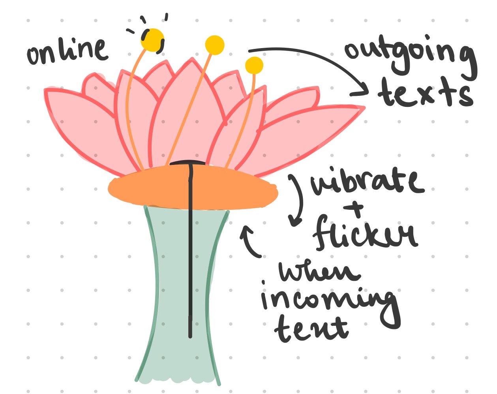
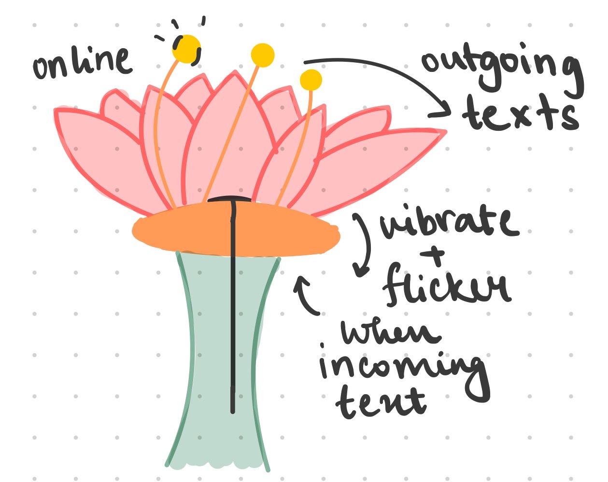

Obscura: A hat full of surprises
A wearable magic hat that combines the joy of bubbles with a speech-activated card reveal, creating an enchanting experience for kids' magic shows.
Concept Development
 

Final Artifact

When I think of joy, I’m reminded of the awe and wonder that magic shows brought to me as a child—the whimsy, the enchantment, and the pure delight of the unexpected. With Obscura, I sought to recreate that feeling, crafting a wearable magic hat that captivates young audiences with interactive, technology-driven wonder.
Obscura is powered by Arduino and combines two intuitive inputs—a speech command and a touch button—each unlocking a magical output. A secret phrase activates a servo motor to reveal a hidden card, creating a moment of surprise and mystery. A touch of a button triggers a motorized bubble system, filling the air with playful, floating bubbles that bring a sense of enchantment to life.
Designed as a lightweight, wearable device, Obscura seamlessly merges practicality with whimsy, ensuring the performer’s comfort while delivering a magical, interactive experience. It’s a modern twist on the timeless magic show, blending technology and imagination to evoke joy and wonder in children.
Video Demo
Project Code
The project consists of two main code files: a Python script and an Arduino INO file. The Python script uses a speech recognition library to detect specific phrases such as a magic command ("read your mind"). When the command is detected, it sends signals to the Arduino through a serial connection. The Arduino INO file reads these signals to control a micro servo to reveal a card. The Arduino code also integrates a touch sensor and controls two DC motors to activate the bubble system.
Check out the code on GitHub.